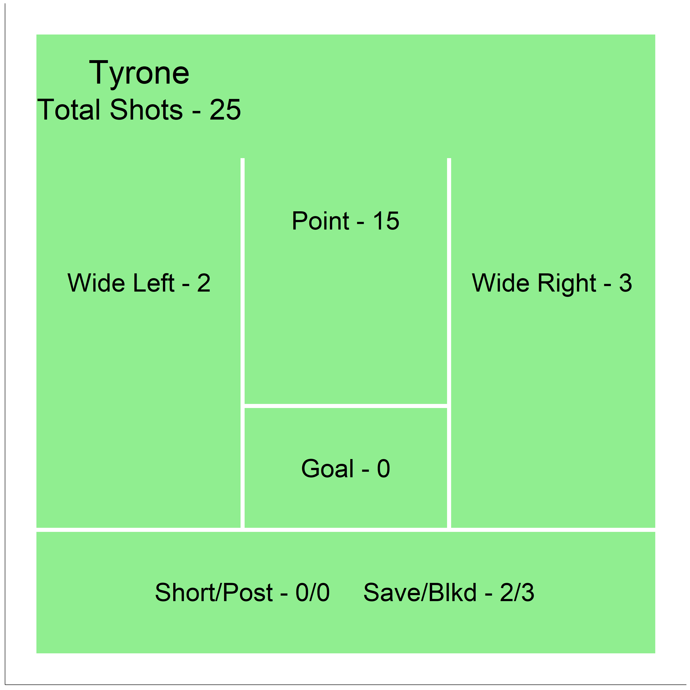
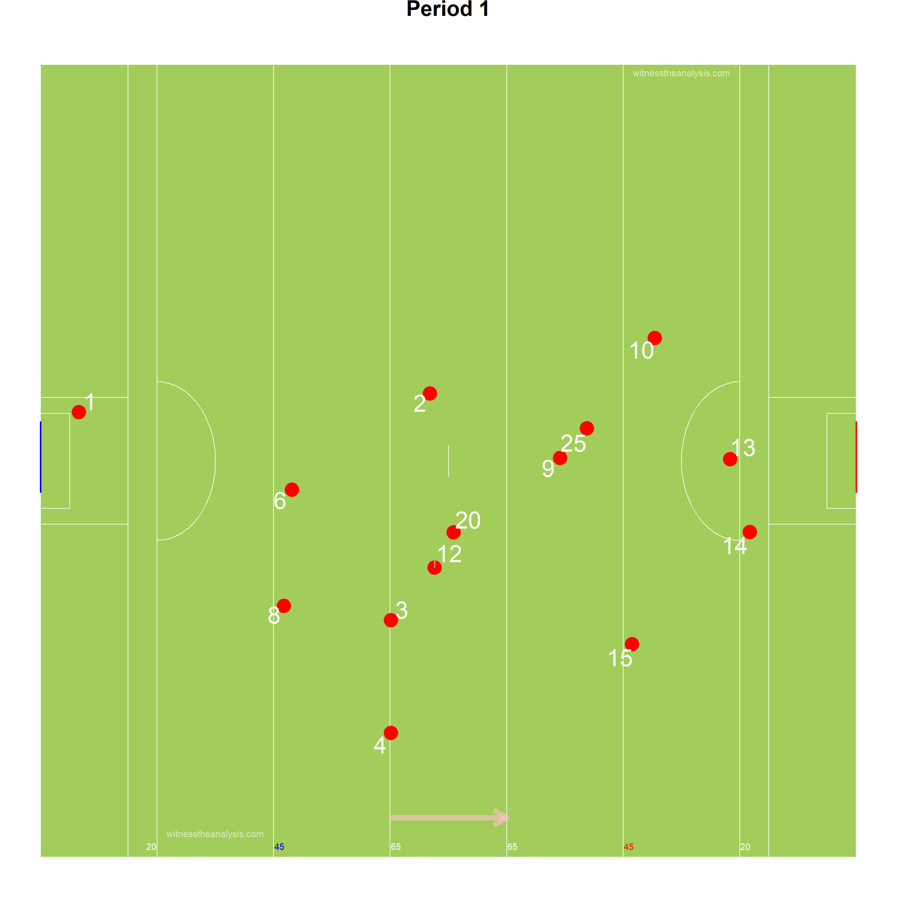
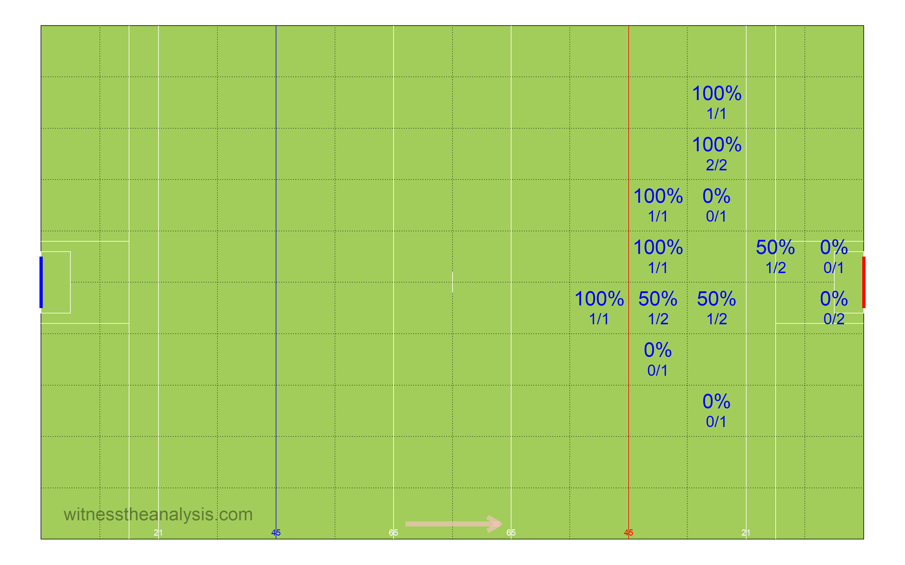
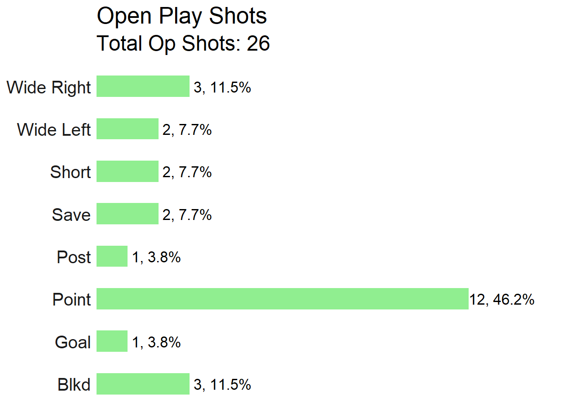
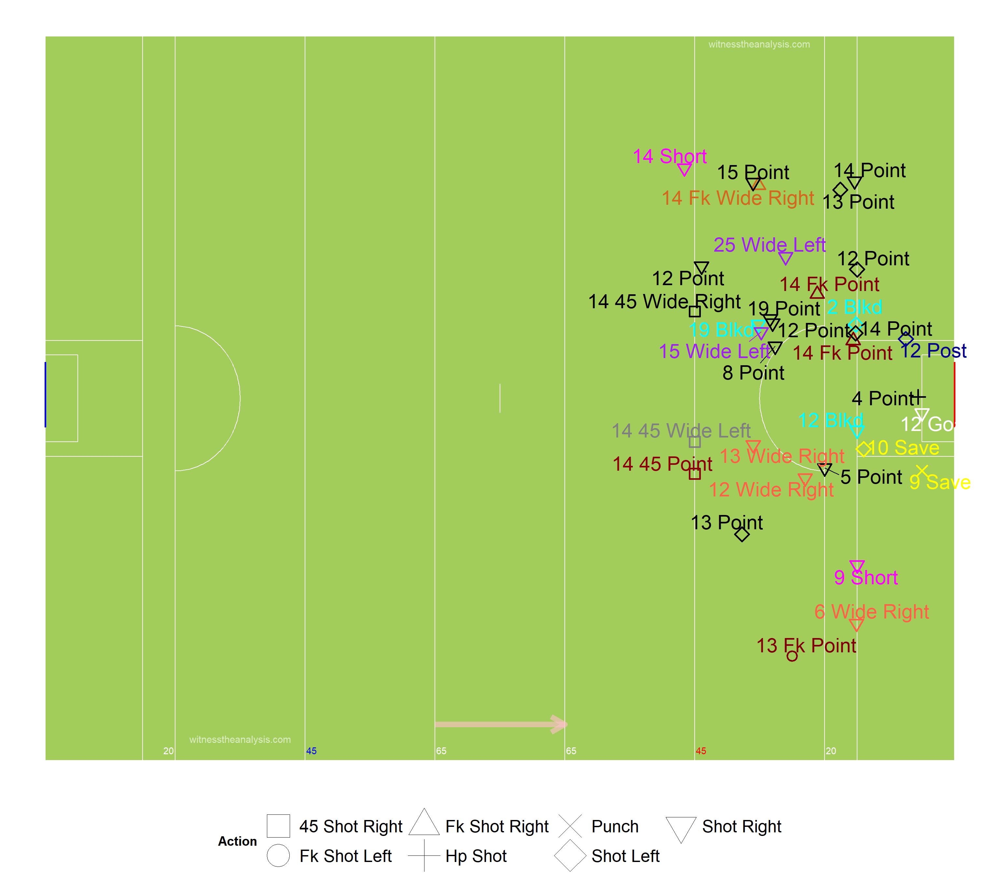
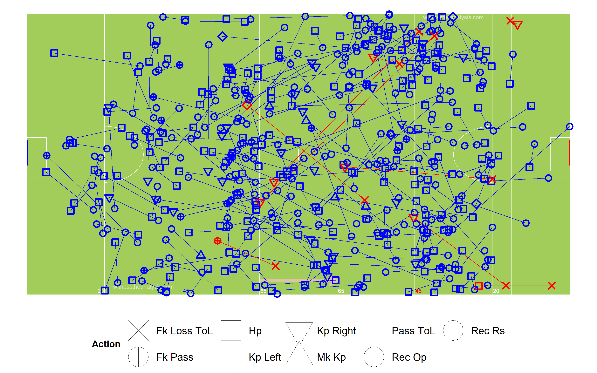
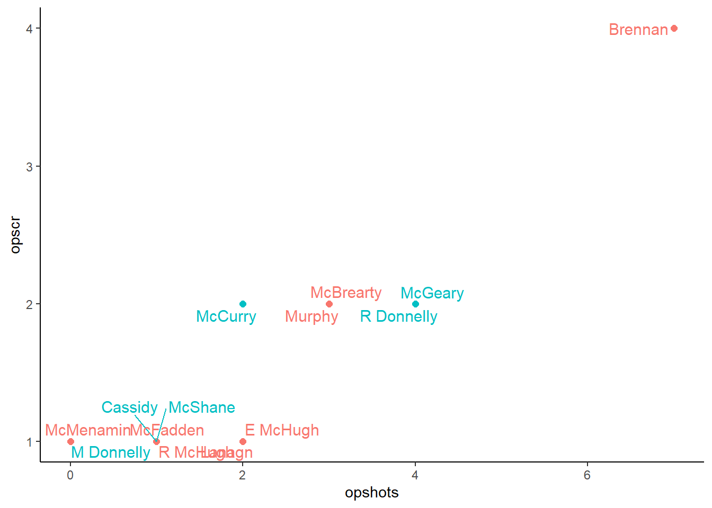

Tyrone (0.15) vs Donegal (1.16)
Ulster Senior Football Championship Semi-Final
#Summary ##Starting Line Up (Number, Player, Playing time) ###Tyrone
###Donegal
##Scores| Tyrone. | Donegal. |
|---|---|
| N Morgan (0-02, 1f, 1 ’45) | S McMenamin (0-01); |
| M Donnelly (0-01), | R McHugh (0-01), |
| K McGeary (0-02), | H McFadden (0-01), |
| C McShane (0-04, 3f), | E McHugh (0-01), |
| R Donnelly (0-2) | J Brennan (1-03); |
| 24 D McCurry (0-03, 1f) | P McBrearty (0-03, 1f), |
| 7 M Cassidy (0-01) | M Murphy (0-05, 2d, 1 ’45), |
| M Langan (0-01). |
| Team | Score.Eff.. | Shots.PerPoss | Scores.PP | Op.Scores.PP | Fk.Score. | Ko. |
|---|---|---|---|---|---|---|
| Tyrone | 50% | 49% | 29% | 18% | 83% | 68% |
| Donegal | 54% | 60% | 33% | 25% | 75% | 79% |

##Scoring Timeline
##Score Differential 
#Positioning & Possessions ##Average Position by Action ###Tyrone ###Game
###Period 
###Donegal ###Game
###Period 
##Areas of Play by Possession ###Tyrone
###Donegal
##Denisty Map (All Actions) ###Tyrone
###Donegal
##Path of Possession
| Lines | X | X.1 | X.2 |
|---|---|---|---|
| Action | Colour | Action | Colour |
| Hand Pass | Black | Kickout Lost | Dark Red |
| Run | Blue | Kick Pass Left | Pink |
| Score | Yellow | Kick Pass Right | White |
| Miss shot | Red | Fk/Mk/Sl Pass | Light Blue |
| Kickout | Gold | Pass Loss | Red |
| Dots | |||
| Action | Colour | ||
| Possession Won | Purple | ||
| Ko/Pass Lost | Red | ||
| Fk Won | Blue | ||
| Fk Won (in 45) | Orange | ||
| Kickout Won | Black |
###Tyrone
###Donegal
#General ##Kick Outs ###Tyrone
###Kickout Efficiency 
###Kickout Network - Tyrone
###Donegal


###Kickout Efficiency
###Kickout Network - Donegal
##Turn overs/Possession Won
###Tyrone
###Donegal
##Frees Won ###Tyrone

###Donegal
##Frees Loss ###Tyrone
###Donegal
#Attacking
##Attacking Stats| X | Mayo | X.1 | Roscommon | X.2 |
|---|---|---|---|---|
| Shot | Score | Shot | Score | |
| AttTime | 00:08:59 | 00:05:33 | 00:15:41 | 00:09:04 |
| possave | 00:00:22 | 00:00:22 | 00:00:31 | 00:00:32 |
| phaseave | 0.00017329 | 0.000167572 | 0.000242027 | 0.000262346 |
| Origin Type | ||||
| Shot | Score | Shot | Score | |
| PW | 14 | 9 | 13 | 8 |
| Ko | 10 | 6 | 9 | 8 |
| Pitch Area Origin | ||||
| Shot | Score | Shot | Score | |
| Def | 15 | 8 | 19 | 11 |
| Def Mid | 4 | 4 | 1 | 0 |
| Att Mid | 1 | 1 | 3 | 1 |
| Att | 4 | 2 | 3 | 2 |
| Poss Duration | ||||
| Shot | Score | Shot | Score | |
| 0-9 | 2 | 1 | 3 | 2 |
| 10-19 | 8 | 6 | 9 | 6 |
| 20-29 | 8 | 4 | 5 | 4 |
| 30-39 | 5 | 4 | 3 | 1 |
| 40-49 | 1 | 0 | 2 | 0 |
| 50-59 | 0 | 0 | 0 | 0 |
| 60-69 | 0 | 0 | 2 | 2 |
| 70+ | 0 | 0 | 2 | 2 |
| Team | Poss | Phase | All.Shots | All.Scores | Shots.Per.Poss | Scores.PP | Shots.Op | Scores.Op | Score.Eff.. | Op.Scores.PP |
|---|---|---|---|---|---|---|---|---|---|---|
| Tyrone | 51 | 67 | 25 | 15 | 49% | 29% | 18 | 9 | 50% | 18% |
| Donegal | 52 | 74 | 33 | 17 | 63% | 33% | 26 | 13 | 50% | 25% |
| Team | Poss Time | Ave Poss Shot | Ave Phase Shot | Ave Poss Scr | Ave Phase Scr | Ave Act Poss | Ave Act Sht | Ave Act Scr | ||
| Tyrone | 00:22:23 | 00:00:22 | 00:00:15 | 00:00:22 | 00:00:14 | 10.14 | 12.58 | 13.13 | ||
| Donegal | 00:22:23 | 00:00:31 | 00:00:21 | 00:00:32 | 00:00:23 | 13.62 | 16.97 | 17.41 |
| Tyrone | Shots | X | X.1 | X.2 | X.3 | X.4 | X.5 | X.6 | X.7 |
|---|---|---|---|---|---|---|---|---|---|
| Time(secs) | |||||||||
| Area | 0-9 | 10-19 | 20-29 | 30-39 | 40-49 | 50-59 | 60-69 | 70+ | Total |
| Def | 0 | 2 | 7 | 5 | 1 | 0 | 0 | 0 | 15 |
| Def Mid | 1 | 2 | 1 | 0 | 0 | 0 | 0 | 0 | 4 |
| Att Mid | 1 | 0 | 0 | 0 | 0 | 0 | 0 | 0 | 1 |
| Att | 0 | 4 | 0 | 0 | 0 | 0 | 0 | 0 | 4 |
| Tyrone | Scores | ||||||||
| Time(secs) | |||||||||
| Area | 0-9 | 10-19 | 20-29 | 30-39 | 40-49 | 50-59 | 60-69 | 70+ | Total |
| Def | 0 | 2 | 2 | 4 | 0 | 0 | 0 | 0 | 8 |
| Def Mid | 0 | 2 | 2 | 0 | 0 | 0 | 0 | 0 | 4 |
| Att Mid | 1 | 0 | 0 | 0 | 0 | 0 | 0 | 0 | 1 |
| Att | 0 | 2 | 0 | 0 | 0 | 0 | 0 | 0 | 2 |
| Donegal | Shots | ||||||||
| Time(secs) | |||||||||
| Area | 0-9 | 10-19 | 20-29 | 30-39 | 40-49 | 50-59 | 60-69 | 70+ | Total |
| Def | 0 | 10 | 3 | 3 | 2 | 0 | 2 | 3 | 23 |
| Def Mid | 0 | 1 | 0 | 0 | 0 | 0 | 0 | 0 | 1 |
| Att Mid | 0 | 1 | 2 | 0 | 0 | 0 | 0 | 0 | 3 |
| Att | 3 | 0 | 0 | 0 | 0 | 0 | 0 | 0 | 3 |
| Donegal | Scores | ||||||||
| Time(secs) | |||||||||
| Area | 0-9 | 10-19 | 20-29 | 30-39 | 40-49 | 50-59 | 60-69 | 70+ | Total |
| Def | 0 | 6 | 3 | 1 | 0 | 0 | 2 | 2 | 14 |
| Def Mid | 0 | 0 | 0 | 0 | 0 | 0 | 0 | 0 | 0 |
| Att Mid | 0 | 0 | 1 | 0 | 0 | 0 | 0 | 0 | 1 |
| Att | 2 | 0 | 0 | 0 | 0 | 0 | 0 | 0 | 2 |
##Open Play Shots - Location & Outcome
###Tyrone
###Shot Efficiency - Tyrone 
###Donegal

###Shot Efficiency - Donegal
##All Shots - Location & Outcome ###Tyrone
###Donegal

##All Shots Origin by Possession ###Tyrone (Blue = Score)
###Donegal (Blue = Score)
##Open Play Shot Origin by Phase ###Tyrone (Blue = Score)
###Donegal (Blue = Score)
##Shot Network ###Tyrone
###Donegal
##Score Network ###Tyrone
###Donegal
#Passing
##All Passes ###Tyrone
###Donegal

##Passes into 45 ###Tyrone
###Donegal
##Passes Inside Opp 65 ###Tyrone
###Donegal
##Pass Network ###Tyrone
###In Degree (Number of Players a Player Received a Pass from)
## R Donnelly McGeary Hampsey McKernan McDonnell McCurry McCann Burns McShane McAliskey Cavanagh Kennedy M Donnelly Brennan Morgan
## 16 13 9 9 7 7 6 6 6 6 5 4 4 4 3
## McNamee Rafferty McCrory Sludden Cassidy Harte
## 3 3 3 2 2 1###Out Degree (Number of Players a Player Made a Pass to)
## R Donnelly McGeary McKernan Hampsey Kennedy McShane Morgan Burns McNamee Cavanagh M Donnelly McAliskey McCurry McCrory McDonnell
## 13 11 9 8 8 7 6 6 5 5 5 5 5 5 4
## McCann Harte Rafferty Sludden Brennan Cassidy
## 3 3 3 3 3 2###Strength in (Number of Passes Received by a Player)
## R Donnelly McGeary Hampsey McShane McKernan M Donnelly McCurry McDonnell McCann Cavanagh Burns McAliskey Brennan Kennedy McNamee
## 24 23 13 11 10 10 9 8 7 7 7 7 7 6 5
## Morgan Rafferty McCrory Sludden Cassidy Harte
## 4 4 3 2 2 1###Strength Out (Number of Passes/Shots Made by a Player)
## McGeary R Donnelly Hampsey McKernan Morgan Kennedy Burns McShane McNamee McCann M Donnelly McCurry McDonnell Cavanagh McAliskey
## 23 22 12 11 9 9 8 8 7 7 7 7 6 6 6
## McCrory Brennan Harte Rafferty Sludden Cassidy
## 6 5 3 3 3 2###Betweenness Centrality (Flow of Passes through a Player)
## R Donnelly McGeary McKernan Hampsey McShane McCurry Kennedy Morgan McDonnell Burns McCann McCrory McAliskey Cavanagh
## 0.199327381 0.167286709 0.069867210 0.048054212 0.030948847 0.023286364 0.018827902 0.015634278 0.011778953 0.010851095 0.009907451 0.009051475 0.008558055 0.005283635
## McNamee M Donnelly Sludden Brennan Cassidy Rafferty Harte
## 0.004807018 0.002237640 0.001987535 0.001503759 0.001491228 0.001414517 0.000000000###Closeness Centrality (How Well connected and central a Player is within the Teams Network)
## R Donnelly McGeary McKernan Hampsey McCurry McDonnell Kennedy Burns McShane McCann McAliskey Morgan Cavanagh M Donnelly McNamee
## 0.8695652 0.8333333 0.7692308 0.7407407 0.6666667 0.6451613 0.6451613 0.6451613 0.6451613 0.6250000 0.6250000 0.6060606 0.6060606 0.6060606 0.5882353
## McCrory Rafferty Sludden Brennan Cassidy Harte
## 0.5882353 0.5714286 0.5714286 0.5555556 0.5555556 0.5405405###Entropy (The Unpredictability in who a Player Passes to/Takes shot)
## M Donnelly McCann McShane McGeary McNamee Morgan Brennan McCurry Burns R Donnelly Hampsey Cavanagh Rafferty McKernan McDonnell
## 0.8762910 0.8944179 0.9380924 0.9385354 0.9517962 0.9549080 0.9577421 0.9631397 0.9641844 0.9657760 0.9721582 0.9750064 0.9755038 0.9761941 0.9766875
## Kennedy McAliskey McCrory Harte Sludden Cassidy
## 0.9782224 0.9807239 0.9825676 1.0000000 1.0000000 1.0000000###Global clustering coefficient (Groups of Players who pass to each other)
## [1] 0.5037594###eigen_centrality (How well connected the well connected are)
## McGeary R Donnelly M Donnelly McShane McKernan Hampsey McCurry Burns McCann Cavanagh Kennedy Brennan McAliskey McDonnell McNamee
## 1.0000000 0.9875822 0.6132341 0.5929990 0.5333109 0.5323908 0.4934800 0.4241458 0.3822328 0.3698043 0.3668011 0.3607412 0.3598631 0.3598472 0.3467654
## Morgan McCrory Rafferty Harte Sludden Cassidy
## 0.2457306 0.2199935 0.2165882 0.1437377 0.1358090 0.1074344##Donegal
###In Degree (Number of Players a Player Received a Pass from)
## R McHugh Murphy McFadden Lanagn Gallagher J Brennan McBrearty O Baoill McGlynn Thompson E McHugh O Donnell McLoone McGrath McGee Patton McMenamin
## 16 15 13 13 12 11 9 9 9 8 7 7 7 6 6 5 4
## McGee Gallen P Brennan
## 4 4 3###Out Degree (Number of Players a Player Made a Pass to)
## McFadden R McHugh Gallagher Murphy O Donnell Lanagn McBrearty Thompson McGrath McLoone J Brennan O Baoill McGlynn McGee Gallen McMenamin Patton
## 16 14 14 13 11 10 9 9 8 8 8 8 8 7 6 5 4
## McGee E McHugh P Brennan
## 4 3 3###Strength in (Number of Passes Received by a Player)
## Murphy McFadden R McHugh Gallagher J Brennan Lanagn McBrearty McLoone O Donnell McGlynn Thompson O Baoill McGee E McHugh McMenamin Patton McGrath
## 29 26 25 20 17 17 15 14 13 12 11 10 9 9 7 6 6
## Gallen McGee P Brennan
## 6 5 4###Strength Out (Number of Passes/Shots Made by a Player)
## McFadden Murphy R McHugh Gallagher O Donnell Lanagn Thompson McGlynn McLoone McGrath McBrearty McGee J Brennan O Baoill McMenamin Gallen Patton
## 34 30 27 21 14 14 14 13 12 11 11 10 10 10 6 6 5
## E McHugh McGee P Brennan
## 5 4 4###Betweenness Centrality (Flow of Passes through a Player)
## R McHugh McFadden Murphy Gallagher Lanagn O Baoill O Donnell McGlynn Thompson J Brennan McLoone McGee McMenamin
## 0.0999518531 0.0931892255 0.0557119306 0.0416741774 0.0240317122 0.0200994043 0.0179267917 0.0178514673 0.0168005085 0.0134007560 0.0113853658 0.0079584669 0.0079130797
## Gallen McBrearty McGee P Brennan McGrath E McHugh Patton
## 0.0073151934 0.0061421020 0.0027689172 0.0025657467 0.0022826426 0.0006903834 0.0006326733###Closeness Centrality (How Well connected and central a Player is within the Teams Network)
## R McHugh McFadden Murphy Gallagher Lanagn J Brennan O Donnell Thompson O Baoill McGlynn McBrearty McGrath McGee McLoone E McHugh Gallen Patton
## 0.9500000 0.9047619 0.9047619 0.8636364 0.8260870 0.7600000 0.7307692 0.7307692 0.7307692 0.7307692 0.7037037 0.6785714 0.6785714 0.6785714 0.6333333 0.6333333 0.6129032
## McMenamin McGee P Brennan
## 0.6129032 0.5937500 0.5757576###Entropy (The Unpredictability in who a Player Passes to/Takes shot)
## Gallagher McFadden Murphy McGlynn E McHugh R McHugh McLoone McBrearty McGee J Brennan P Brennan Thompson McMenamin O Donnell Patton Gallen McGrath
## 0.9477063 0.9478371 0.9522211 0.9525862 0.9578792 0.9584190 0.9594148 0.9612000 0.9665386 0.9666778 0.9671320 0.9721582 0.9732265 0.9737015 0.9766147 0.9788379 0.9808704
## Lanagn McGee O Baoill
## 0.9811001 0.9825676 0.9839669###Global clustering coefficient (Groups of Players who pass to each other)
## [1] 0.6781609###eigen_centrality (How well connected the well connected are)
## Murphy McFadden R McHugh Gallagher McLoone Lanagn J Brennan McBrearty McGlynn O Donnell Thompson McGee O Baoill McGrath E McHugh Patton McMenamin
## 1.0000000 0.9905483 0.8826072 0.7114196 0.5494679 0.5065526 0.5013381 0.4777892 0.4647567 0.4527230 0.4470410 0.4057673 0.3410501 0.3322479 0.3157933 0.2483935 0.2330735
## Gallen P Brennan McGee
## 0.2043923 0.1663399 0.1594495#Player Stats ##Player On Ball Possession (Number, Player, Total) ###Tyrone
###Donegal

##Posessions Per Playing Time

| Team | ply | opshots | Totteamshot | opscr | Totteamscr | convrate |
|---|---|---|---|---|---|---|
| Tyrone | Morgan | 0 | 0% | 0 | 0% |
|
| Tyrone | Hampsey | 0 | 0% | 0 | 0% |
|
| Tyrone | McNamee | 0 | 0% | 0 | 0% |
|
| Tyrone | McKernan | 0 | 0% | 0 | 0% |
|
| Tyrone | McCann | 0 | 0% | 0 | 0% |
|
| Tyrone | McDonnell | 0 | 0% | 0 | 0% |
|
| Tyrone | Kennedy | 1 | 6% | 0 | 0% | 0% |
| Tyrone | Cavanagh | 0 | 0% | 0 | 0% |
|
| Tyrone | R Donnelly | 4 | 22% | 2 | 33% | 50% |
| Tyrone | M Donnelly | 1 | 6% | 1 | 17% | 100% |
| Tyrone | McGeary | 4 | 22% | 2 | 33% | 50% |
| Tyrone | Burns | 0 | 0% | 0 | 0% |
|
| Tyrone | McShane | 1 | 6% | 1 | 17% | 100% |
| Tyrone | Harte | 1 | 6% | 0 | 0% | 0% |
| Tyrone | Rafferty | 1 | 6% | 0 | 0% | 0% |
| Tyrone | McAliskey | 1 | 6% | 0 | 0% | 0% |
| Tyrone | Sludden | 0 | 0% | 0 | 0% |
|
| Tyrone | Brennan | 1 | 6% | 0 | 0% | 0% |
| Tyrone | McCurry | 2 | 11% | 2 | 33% | 100% |
| Tyrone | Cassidy | 1 | 6% | 1 | 17% | 100% |
| Tyrone | McCrory | 0 | 0% | 0 | 0% |
|
| Team | ply | opshots | Totteamshot | opscr | Totteamscr | convrate |
|---|---|---|---|---|---|---|
| Donegal | Patton | 0 | 0% | 0 | 0% |
|
| Donegal | McGrath | 1 | 4% | 0 | 0% | 0% |
| Donegal | McGee | 0 | 0% | 0 | 0% |
|
| Donegal | McMenamin | 0 | 0% | 1 | 8% |
|
| Donegal | R McHugh | 1 | 4% | 1 | 8% | 100% |
| Donegal | E McHugh | 2 | 8% | 1 | 8% | 50% |
| Donegal | Gallagher | 0 | 0% | 0 | 0% |
|
| Donegal | McFadden | 1 | 4% | 1 | 8% | 100% |
| Donegal | McGee | 1 | 4% | 0 | 0% | 0% |
| Donegal | O Donnell | 0 | 0% | 0 | 0% |
|
| Donegal | McLoone | 0 | 0% | 0 | 0% |
|
| Donegal | Brennan | 7 | 29% | 4 | 31% | 57% |
| Donegal | McBrearty | 3 | 13% | 2 | 15% | 67% |
| Donegal | Murphy | 3 | 13% | 2 | 15% | 67% |
| Donegal | Lanagn | 2 | 8% | 1 | 8% | 50% |
| Donegal | Thompson | 1 | 4% | 0 | 0% | 0% |
| Donegal | O Baoill | 1 | 4% | 0 | 0% | 0% |
| Donegal | McGlynn | 0 | 0% | 0 | 0% |
|
| Donegal | Gallen | 1 | 4% | 0 | 0% | 0% |
| Donegal | Brennan | 0 | 0% | 0 | 0% |
|
##Open Play Shots vs Play Time
##Open Play Scores vs Play Time
##Open Play Shots vs Open Play Score 
##Player Possession Involvement ###Tyrone
###Donegal 
##Player Shot Involvement ###Tyrone
###Donegal 
##Player Score Involvement ###Tyrone
###Donegal
##Actions and Zones ##By Period ###Tyrone
###Donegal
##Zones Frequency ###Tyrone
###Donegal